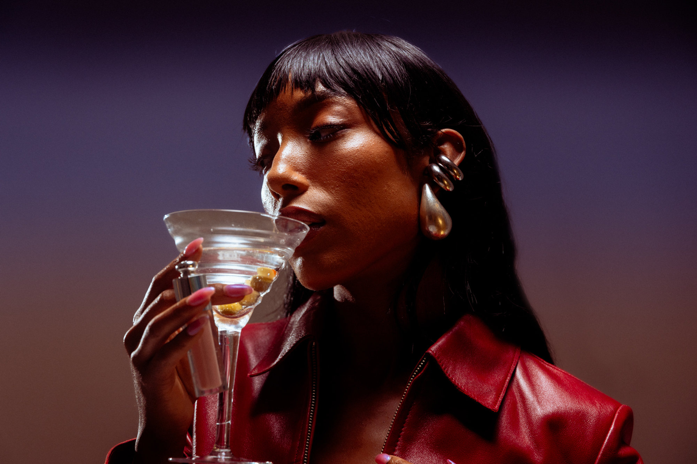
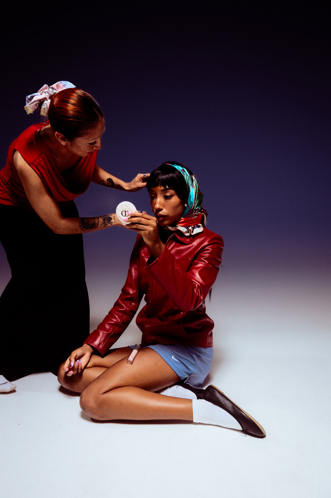
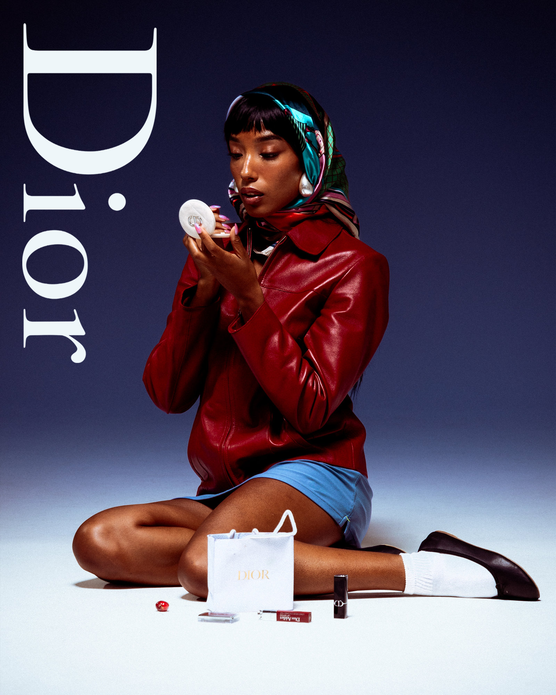
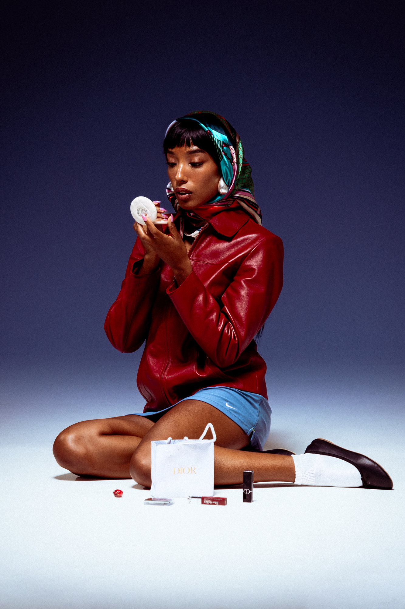
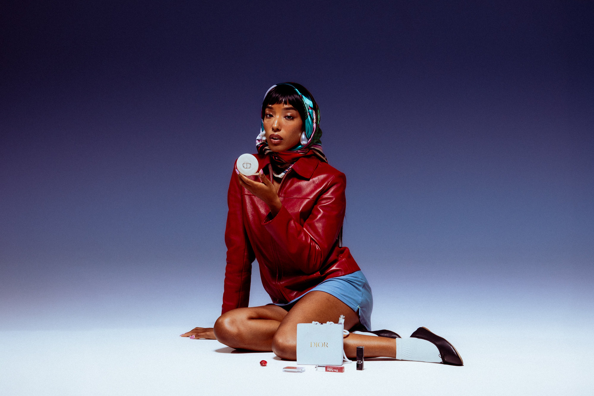
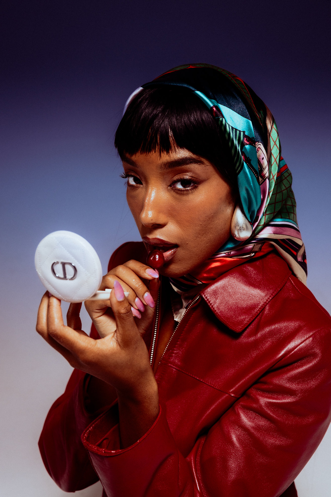
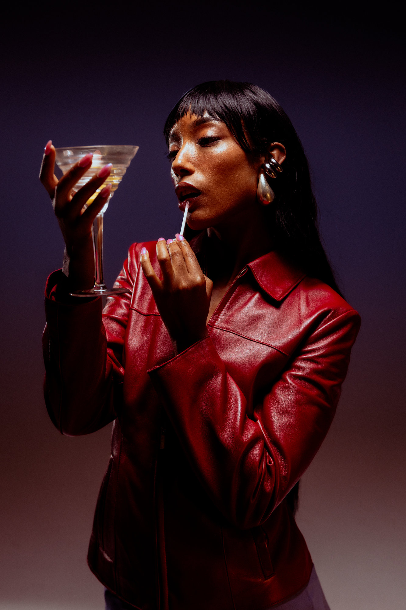
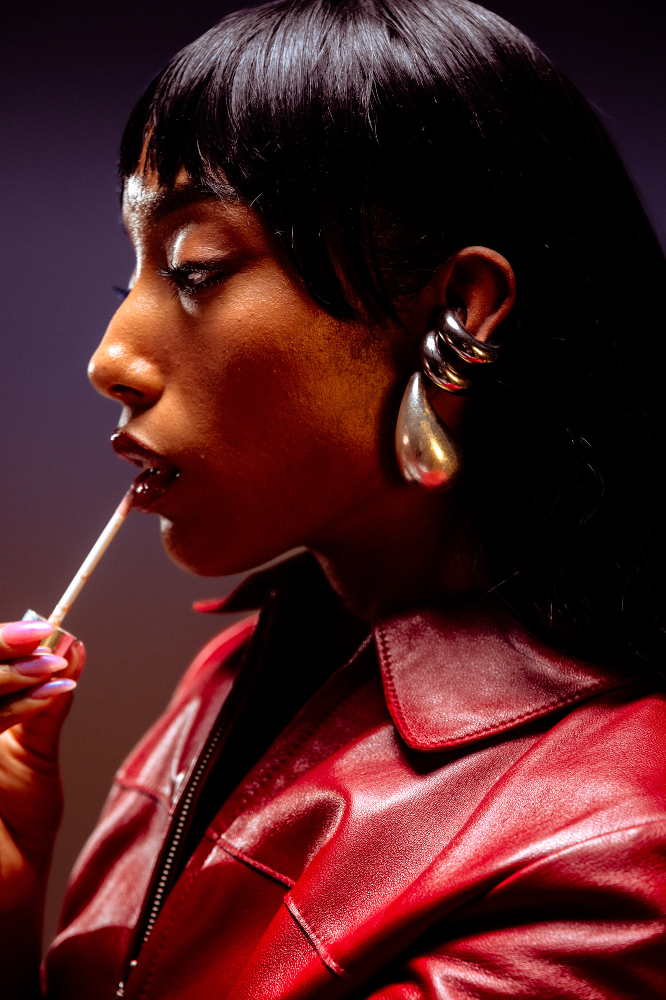
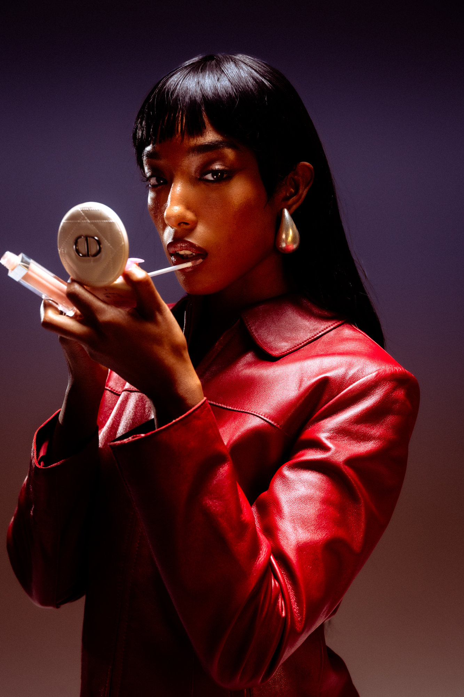

Dior / Commercial
Dior Campaign
About the project
Shot in Dallas as part of a creative campaign for Dior, with model Roxy Pryor and styling by Yancy. I led the creative direction, but the shoot came together as a true collaboration. We focused on sharp, elegant lighting to lift the mood and bring out the texture in each look.
The energy on set was collaborative and fun, a mix of intention and spontaneity that translated beautifully on camera.
- Creative direction, photography & lighting
- Peter Sanjur
- Model
- Roxy Pryor
- Styling
- Yancy








